Choosing the right character in Don't Starve Together is the first step toward surviving your first winter. With over 18 unique survivors, each offering different playstyles, the choice can be overwhelming. Use this guide to find your perfect match based on your experience level.
| Portrait | Name | Health | Hunger | Sanity | Brief Description |
|---|---|---|---|---|---|
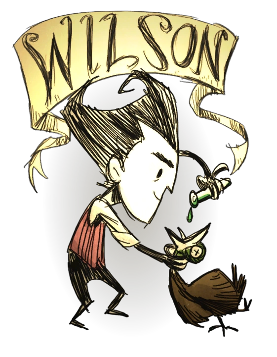 | Wilson | 150 | 150 | 200 | The Scientist. Grows a magnificent beard. |
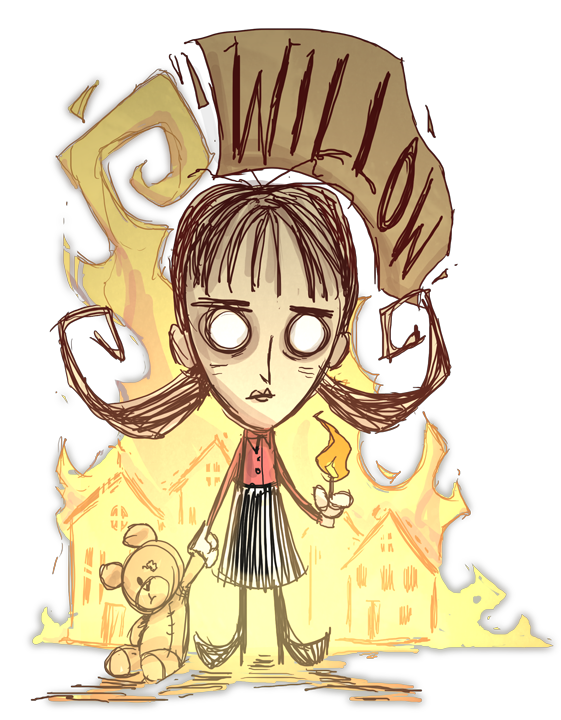 | Willow | 150 | 150 | 120 | The Firestarter. Loves fire. |
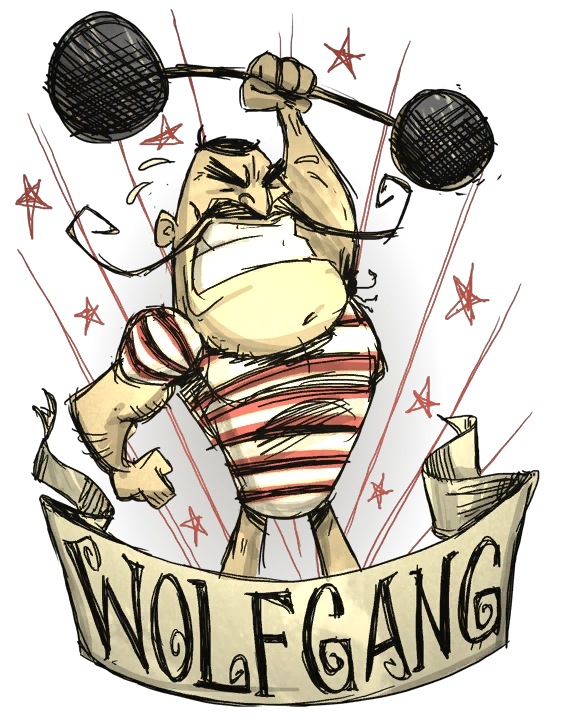 | Wolfgang | 200 | 200 | 200 | The Strongman. Becomes stronger. |
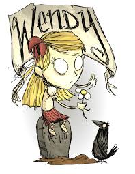 | Wendy | 150 | 150 | 200 | The Bereaved. Summons Abigail. |
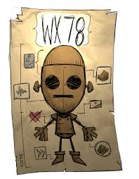 | WX-78 | 125 | 125 | 125 | The Indifferent Automaton. |
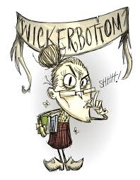 | Wickerbottom | 150 | 150 | 250 | The Librarian. Writes magical books. |
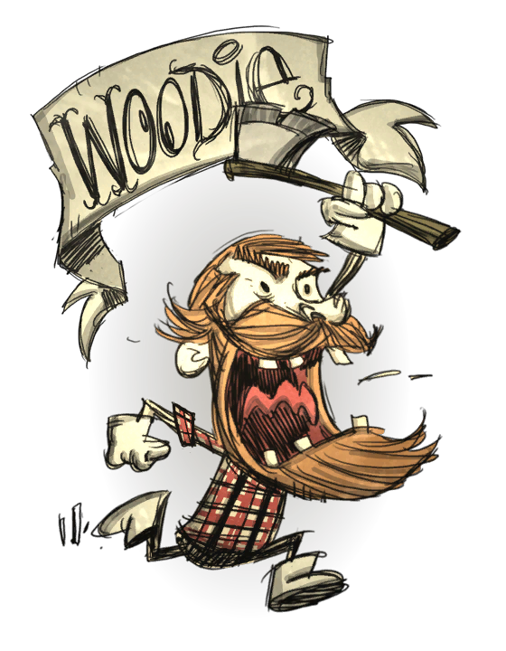 | Woodie | 150 | 150 | 200 | The Lumberjack. Transformers. |
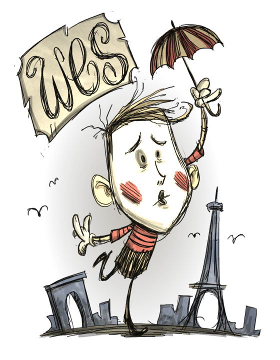 | Wes | 75 | 75 | 75 | The Mime. Makes balloon animals. |
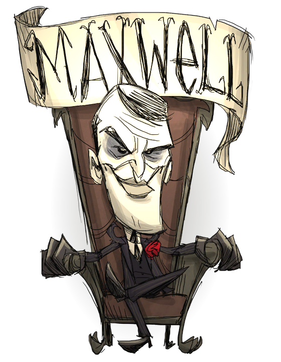 | Maxwell | 75 | 150 | 200 | The Puppet Master. |
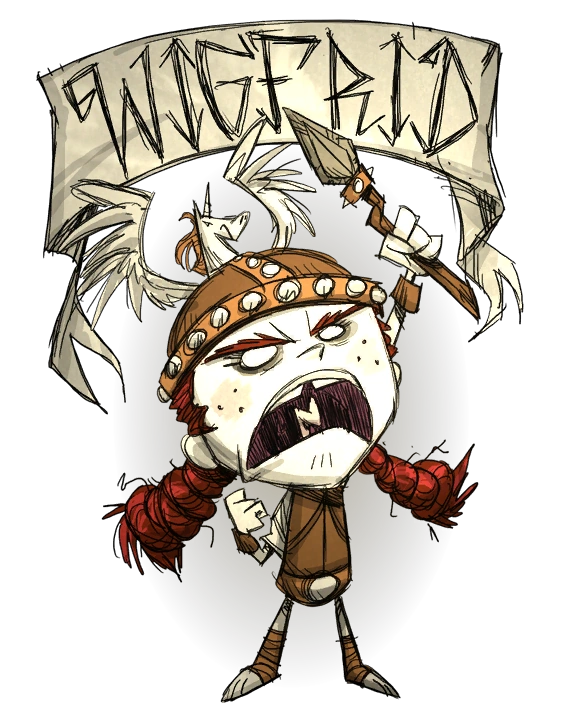 | Wigfrid | 200 | 120 | 120 | The Performance Artist. Meat only. |
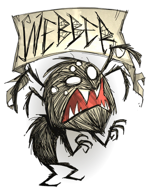 | Webber | 175 | 175 | 100 | The Spider-boy. |
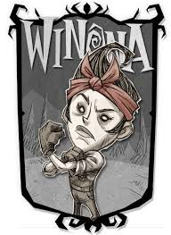 | Winona | 150 | 150 | 200 | The Handywoman. |
| DLC & Special | Warly | 150 | 250 | 200 | The Chef. Cooks meals. |
| Wortox | 200 | 175 | 150 | The Soul Eater. | |
| Wormwood | 150 | 150 | 200 | The Lonesome plant. | |
| Wurt | 150 | 200 | 150 | The Little Merrmaid. | |
| Walter | 130 | 110 | 200 | The Fearless with Woby. | |
| Wanda | 100 | 175 | 200 | The Timekeeper. | |
| Total of 18 characters available. | |||||